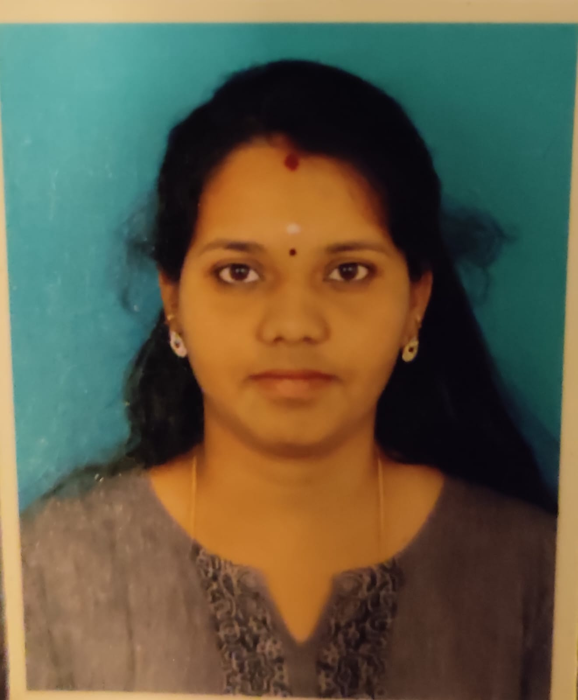

RESUME

Akila.C
akila271819@gmail.com
+91-9876543210
Objectives
Detail oriented IT professional with 2.5 years of experience in I.T operations and Service Management. Looking for an opportunity to secure a desired position, where I can deploy all my skills for the benefit of the organization, realizing the goals and in the process of advancing my career and to excel in the area of work. Having knowledge on webMethods with 1.8 yrs of Exp.
Professional Summary
- 2.5 years of experience in IT Service management and I.T operations management.
- Experienced in 24*7 Service delivery, Service Desk and End user support.
- Proficient in ITIL processes and practices.
- Knowledge on webMethods as Developer and Admin tasks.
- Adopt at multitasking to achieve individual and team goals.
- Highly Motivated Technical Support Professional and Skilled at interacting with customers.
Professional Experience:
Novitas Technologies pvt. ltd.
ROLE: System Engineer
Period: From Apr 2019 to Sep 2021
- Ensured effective service desk support for all IT issues and acted as escalation point
- Monitoring the MWS logs on the production and analyzing the failure transactions.
- Good Analysis and debugging the code.
- Performing the Unit Testing.
- Deploying the code to higher Env.
- Basic Knowledge on GIT,CI/CD Pipeline Jenkins, JIRA
- Formulating and updating SOP's
- Writing SQL Queries to fetch the data from DB.
- Request and Incident handling.
- Monitoring SLA targets closely to ensure that we are meeting client expectations
- Providing support for Microsoft Office issues/queries, Operating system related issues,
- Preparing SLA exception reports and investigate the root cause of the SLA breach
- Helping the team on closure of Delinquent tickets
- Maintaining and adhering to operational procedures; documenting all activities and task
Educational Qualification:
B.E (ECE) , Shirdi Sai Engineering College, Bangalore
Personal Information:
Name:
Akila.C
Fathers Name:
P.Chennakesavan
Date of Birth :
08/06/1990
Sex:
Female
Marital Status:
Married
Nationality:
Indian
Languages Known:
English, Tamil and Telugu
Permanent Address:
#7/4B/3,
West Mada Cross Street, Kaladipet,
Thiruvottiyur, Chennai - 600019